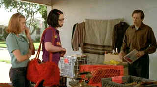

| Ghost
World/A,A |
| MGM/2001/111/ANA
1.85 |
Ghost World is about people who don't
fit and how they try to fit in. Director Terry Zwigoff comes across as a
very kind human being. He relates to string of misfits peopling Ghost
World. He's not judgmental about some of the strange behavior. With
Zwigoff as guide, the world comes to striking life.
Enid and Rebecca are about to enter the next
phase of their lives. After a wry high school graduation ceremony and a
glimpse at the prom, they now must face the world from a new
perspective. Before they find their way into the work place, they are
intercepted by a prank which turns into a fascinating relationship.
Ultimately, it's a devastatingly sad movie, but of course, it's very
funny as well. Comedy turns to drama in such a natural fashion and it
never puts you off. Some films make that tone change and never recover
from it. Ghost World's tone is so eccentric from the get-go, when
it veers into the melancholy, it seems natural. So many films have been
made about disaffected youths trying to fit into society and some have
been successful. Ghost World succeeds like none before it in
creating characters that exist within a desperate world; not a nasty
world or a mean world and never melodramatic. There's a keen
understanding in the script of the way people make fun of other people
as a defense mechanism. Enid and Rebecca take pride in making fun of
others, looking at people to justify their own outsider behavior.
|
 |
| Record
shopping, right. ©Columbia |
The script by Daniel Clowes and Zwigoff is
adapted from Clowes' own original comic book work. It's interesting how
Zwigoff's last film Crumb, another brilliant look at
eccentricity, chronicled the life of outlandish cartoonist Robert Crumb.
Here he is again in the world of comics. It's hard to believe that
Ghost World comes from a comic book considering how well it paints a
picture of life. It's so human. You never doubt the honestly drawn
characters.
Thora Birch and Scarlett Johansson are both excellent
as Enid and Rebecca. Birch's role is stupendous. Even her gait, the
awkward way she walks and carries herself spells outsider. Her clothing,
attitudes, all go into making a finely chiseled image of Enid. Birch
gives life to Enid. She makes her sympathetic. Johansson's Rebecca is a
cool character without Enid's flare for life. She's effective, but she
walks in the shadow of Birch. Clearly, Ghost World is Birch's
grand platform to show off her great talent.
Considering how wonderful Birch was in American Beauty and the work she
does here in Ghost World may be on the cusp of becoming of our
great naturally gifted actresses. It will be interesting to follow her
career to see how she handles the transition to more mature roles.
This is right up there with the best work Steve Buscemi has
ever done. He is perfectly cast as eccentric record collector Seymour, a
sad soul searching for happiness. What's remarkable about the character
is that he recognizes his own limitations. He can actually see himself
the way other people see him, that it except for the wonderful Enid. In
the end he's a misfit that can't fit in as he succumbs to weakness and
temptation. The fact that Seymour is finally a loser after finding a
real chance for himself is so overpoweringly sad. It's an incredible
moment when Seymour plays those old records for Enid and she tries so
hard to relate.
The relationship between Enid and her father is
well-scripted. Bob Balaban gives him an interesting combination of
delicacy, fear and reticence to enter the fray in confronting Enid. A
number of good scenes chronicle the dead space between them. Along with
Balaban, the supporting cast adds some interesting character variations.
Illeana Douglas has some very funny moments as the summer school art
teacher. Stacy Travis is blissfully unaware as Seymour's new lady Dana.
Zwigoff's pacing moves in perfect synch with the
rhythms of his characters. The spirit of the material is never
compromised for the sake of some artistic flourish. It's handsomely
photographed by Alfonso Beato and the music by David Kitay gets inside
the soul of these characters. Excellent costume and production design.
Enid's wardrobe helps define the character. Her room is plastered with
elements of her world. Seymour's apartment splendidly captures the
details of his character. Zwigoff has put together a fine team of
filmmakers to share his vision. Ghost World may be one of the
finest movies about outsider I have ever seen.
A stunning transfer. Colors are dead on. There's very
little edginess and only in high peak transitions. Detail is excellent.
Natural range of skin tones. Excellent black level is excellent balances
with good shadow detail. Considering the creative source, the rich,
hyper-saturated colors are very appropriate. Colors retain their
individuality with a good subtle range. Ghost World is a sparking
transfer that stands up admirably to the wonderful creative content. The
Dolby Digital 5:1 surround sound is clean. All the precious dialogue is
delivered with clarity and the music finds good balance.
There are four deleted or altered scenes. The pretty standard format
making of is revealing enough about the film.
Reviewed on a Sharp 9000VX DLP Projector
|
|
|
|

The
Feature Archive has articles ranging
from
Akira Kurosawa to
Blonde Bimbos.
Movie Rage: Death in the Aisles
Everyone knows what it feels like to get angry at the movies
these days. Here's a humorous but not so delightful view of big screen
misery
 
ISF Monitor
Calibrations in the Tristate New York area. Lots of hardware
info and frequent hardware peaks from video expert Kevin Miller. They
may be judgmental, but that's the point, isn't it. Lots of DVD reviews
plus news and more.

Images is a non-commercial Web site created for everyone who enjoys
movies and popular culture. Images is published quarterly; however, new
reviews will appear each week, so check back often.
Werner Herzog
Film
![[ Werner Herzog ]](../images/werner-herzog.jpg)
The Web site of director Werner Herzog includes lots of great material.
A perfect stop for anyone who admires his films.

The Movie Poster Archive
includes extensive poster images from the films of stars like Susan
Hayward, Kirk Douglas, Katharine Hepburn and many more. Our featured
star is
William Holden.

To Kill a Mockingbird (SE)/ A,A

From the great novel by Harper Lee, this tale of growing up
in the 1930s South is splendidly evocative of place and period. Gregory
Peck is splendid. Direction impeccable.
|